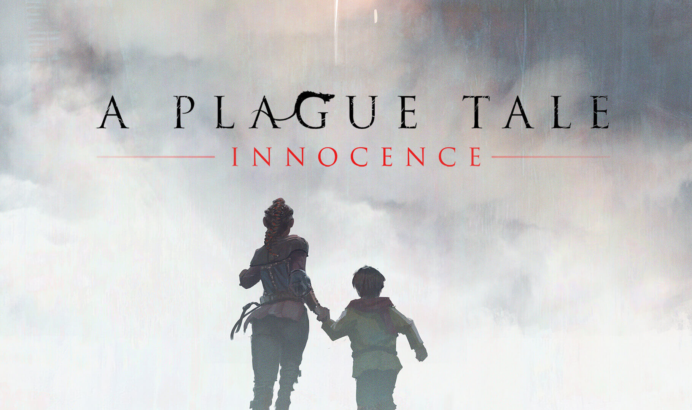

Игры для одиночного прохождения
1.Subnautica-игра в жанрах приключенческой игры и симулятора выживания на другой планете состоящей на 90% из воды
2.Raft-игра в жанре симулятор выживания в открытом океане

3.Metro Exodus(2035)-игра в жанре шутера от первого лица
4.Portal 2-игра головоломка от первого лица

5.Sons of the forest-Отправленный на поиски пропавшего миллиардера на отдаленный остров, вы оказываетесь в аду, кишащем каннибалами. Создавайте в одиночку или с друзьями,симулятор ужасов на выживание в открытом мире.
6.Far Cry 5-игра в жанре шутера от первого лица
7.A Plague Tale: Innocence-Отправляйтесь в путешествие вместе с Амицией и ее младшим братом Гуго.
8.A Plague Tale: Requiem-приключенческий экшен, в котором девушка-подросток вместе с братом отправляются в очередной поход, преследуемые страшным проклятием и его последствиями.
9.Shadow of the Tomb Raider-Компьютерная игра из серии Tomb Raider в жанре action-adventure с видом от третьего лица.
10.Frostpunk-Экономическая стратегическая игра, симулятор строительства города в крайне суровых климатических условиях, где нет войн, зато есть главный противник в лице глобального похолодания.